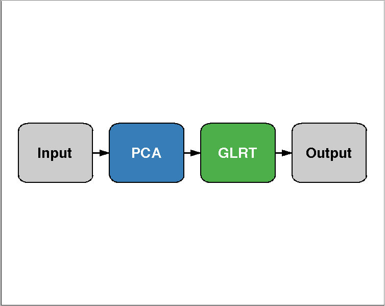
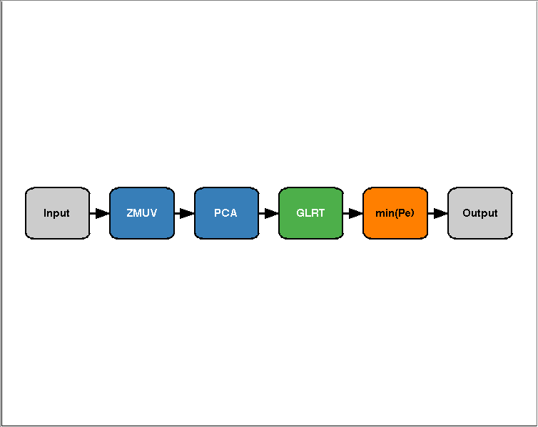
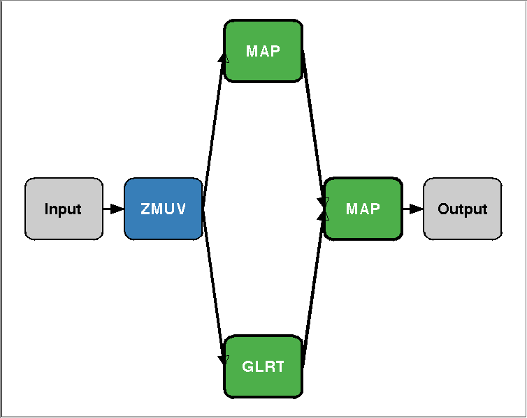
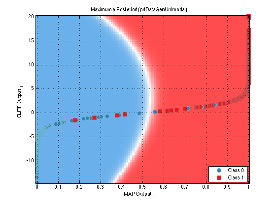

Creating algorithms with the Pattern Recognition Toolbox
One of the most useful features of the Pattern Recognition Toolbox is the ability to create prtAlgorithm objects. prtAlgorithm objects allow you to combine together prtAction objects, and then train and run them as if they were a single object.
Contents
Creating a prtAlgorithm object
The easiest way to create prtAlgorithm objects is to use the overloaded + and - operators. The following simple example connects a pre processing object to a classifier, in series.
ds = prtDataGenUnimodal; % Load a dataset preProc = prtPreProcPca; % Create a pre processing object classifier = prtClassGlrt; % Create a generalized likelihood ratio % classifier algo = preProc + classifier; % Cascade the 2 objects together results = algo.kfolds(ds,3); % Perform kfolds validation
Note that you use the prtAlgorithm object in exactly the same maner as you would any other prtAction object such as a classifier or preprocessor.
Plotting a prtAlgorithm object
If you want to display the objects that make up a prtAlgorithm object, you can call the plot function:
plot(algo) % Alternatively, algo.plot();
 Overloaded operators
To add an object to the left or right of the processing chain, use the + operator. Suppose for example, you wanted to add a decision object after the prtClass object, and you also wanted to normalize the input data so that it was zero-mean and unit variance prior to performing PCA. You could do that with the following commands:
%Or: algo = prtPreProcZmuv + algo + prtDecisionBinaryMinPe;
algo = prtPreProcZmuv + algo;
algo = algo + prtDecisionBinaryMinPe;
algo.plot();
 Now you can train, run, or crossvalidate the algorithm just like any other prtAction.
results = algo.kfolds(ds,3);
Connecting objects in parallel
You can use the / and \ operators to connect objects in parallel in a prtAlgorithm. There is no difference in functionality between these two operators, they just control where the object gets placed when displayed with the plot command.
As an example, create a new algorithm that normalizes the data, and then feeds the result into 2 prtClass objects, operating in parallel. The results of these two classifiers are then fused together in another classifier
clear all; % Clear the current objects ds = prtDataGenUnimodal; % Load a dataset algo = prtPreProcZmuv + prtClassMap/prtClassGlrt + prtClassMap; algo = algo.train(ds); plot(algo)
Note, this is not a particularly good classifier, it is only intended as a simple example of how to combine prtActions into a prtAlgorithm.
Accessing the inddividual actions in the actionCell
Inside each prtAlgorithm, there is a data member called actionCell. This is a cell array which contains all of the individual actions that make up the prtAlgorithm object. You can index into this cell array to set properties, or call methods, on the underlying prtAction objects. For example, suppose you would like to plot the decision region contours of the second prtClassMap classifier in the previous example. You could do so in the following manner:
algo.actionCell{4}.plot
